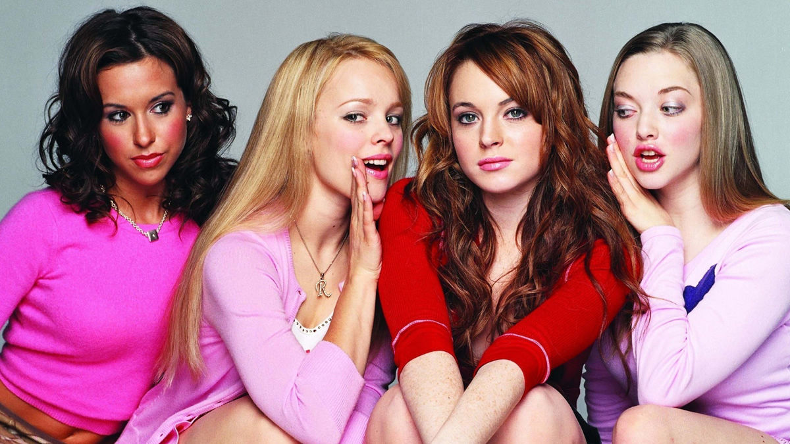
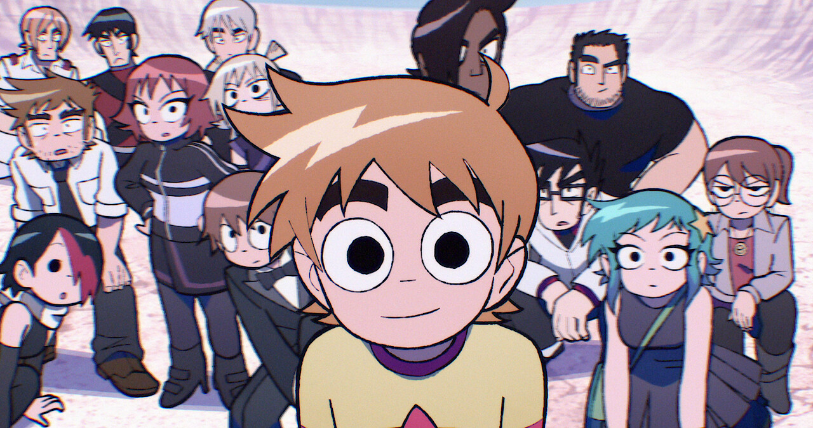

Whitney Wolf
I am a junior in high school and I am passionate about tech, music, art, and wildlife. I currently work at YoChefs Catering Company and in the futue I hope to work in software engineering and with animals.
My Hobbies
- Learning music (guitar)
- Researching about animals, insects, plants
- Playing games
- Drawing, painting
- Programming
- Ice Skating

My Favorite Movies
- Mean Girls
- The Conjuring
- Barbie

My Favorite Tv Series
- Stranger Things
- Scott Pilgrim Takes Off
- iCarly
\

My Favorite Foods
- Potatoes
- Steak
- Fettucini Alfredo

My Favorite Video Games